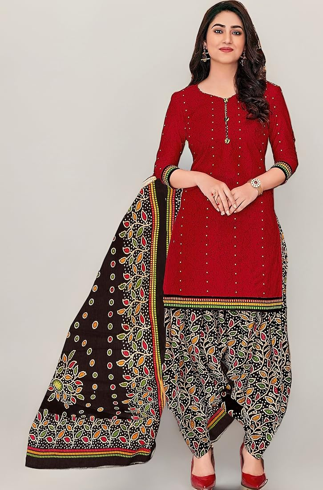
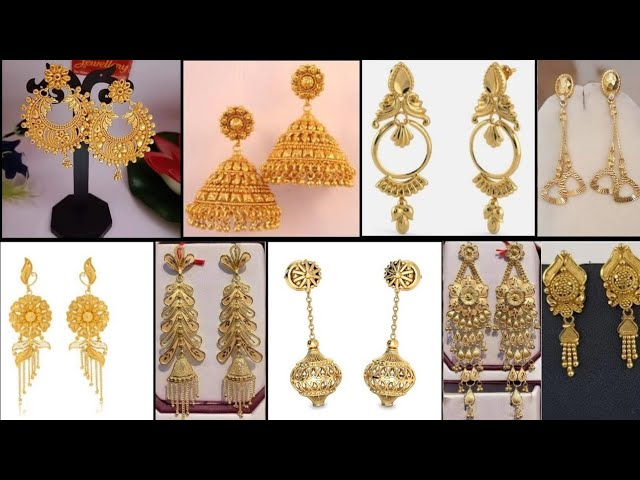

गर्मियों का मौसम आते ही हमारे वार्डरोब में भी बदलाव की जरूरत होती है। इस मौसम में हल्के और आरामदायक कपड़े पहनना जरूरी होता है, लेकिन इसका मतलब यह नहीं कि आप स्टाइल को कम्प्रोमाइज करें। अनुष्का बुटिक आपके लिए लेकर आया है गर्मियों में सूट स्टाइलिंग के कुछ बेहतरीन टिप्स जो आपको स्टाइलिश और कम्फर्टेबल दोनों बनाए रखेंगे।
1. हल्के फैब्रिक्स का चुनाव
गर्मियों में सूट चुनते समय सबसे महत्वपूर्ण है फैब्रिक का चुनाव। कॉटन, लिनन, चंदेरी और मलमल जैसे हल्के और ब्रीदेबल फैब्रिक्स इस मौसम के लिए आदर्श हैं। ये फैब्रिक्स न केवल आरामदायक होते हैं बल्कि गर्मी में भी ठंडक का अहसास कराते हैं।

2. पेस्टल और लाइट कलर्स
गर्मियों में हल्के और पेस्टल शेड्स जैसे पाउडर ब्लू, मिंट ग्रीन, पीच और लैवेंडर बहुत अच्छे लगते हैं। ये कलर्स न केवल गर्मी को रिफ्लेक्ट करते हैं बल्कि आपके लुक को फ्रेश और एलिगेंट भी बनाते हैं।
3. प्रिंट्स और पैटर्न्स
इस सीजन में फ्लोरल, स्ट्राइप्स और ज्योमेट्रिक प्रिंट्स वाले सूट्स बहुत ट्रेंड में हैं। छोटे प्रिंट्स गर्मियों में ज्यादा अच्छे लगते हैं और ये आपके लुक को प्लेफुल भी बनाते हैं।
4. कुर्ती स्टाइलिंग
गर्मियों में कुर्ती को स्टाइलिश बनाने के लिए आप इसे पतलून के बजाय पलाज़ो या स्कर्ट के साथ पेयर कर सकती हैं। नेक डिजाइन में भी बदलाव करके आप अपने लुक को अपग्रेड कर सकती हैं - चीन कॉलर, वी-नेक या ओपन बैक डिजाइन्स ट्राई करें।
5. एक्सेसरीज का सही चुनाव
गर्मियों में हैवी ज्वैलरी के बजाय मिनिमलिस्ट एक्सेसरीज चुनें। लाइटवेट झुमके, डिलीकेट चेन और ब्रेसलेट्स आपके लुक को बैलेंस करते हैं। हैट्स और सनग्लासेस भी गर्मियों में स्टाइलिश एक्सेसरीज हो सकते हैं।
6. फुटवियर चॉइस
गर्मियों में जूतों के बजाय सैंडल्स या मोजरी चुनें। न्यूड या पेस्टल कलर्स के फुटवियर आपके सूट के साथ परफेक्टली मैच होंगे।
7. लेयरिंग ट्रिक्स
अगर आप लेयरिंग करना चाहती हैं तो हल्के स्टोल या डुपट्टा का इस्तेमाल करें। मलमल या जॉर्जेट के डुपट्टे गर्मियों में पहनने के लिए आदर्श हैं।
विशेष सुझाव:
- फिटिंग: गर्मियों में टाइट फिटिंग से बचें, थोड़ा लूज फिट चुनें
- सिल्हूएट: ए-लाइन या स्ट्रेट कट सूट्स गर्मियों में ज्यादा कम्फर्टेबल होते हैं
- वर्क: हेवी एम्ब्रॉयडरी के बजाय मिनिमल वर्क वाले सूट्स चुनें
- कॉम्बिनेशन: टॉप और बॉटम्स को मिक्स-एंड-मैच करके अलग-अलग लुक क्रिएट करें
अनुष्का बुटिक में हमारे पास गर्मियों के लिए विभिन्न प्रकार के सूट्स उपलब्ध हैं जो स्टाइल और कम्फर्ट दोनों प्रदान करते हैं। आप हमारे स्टोर पर आकर इन्हें ट्राय कर सकती हैं या हमारी गैलरी में ऑनलाइन देख सकती हैं। किसी भी जानकारी के लिए हमसे व्हाट्सएप पर संपर्क करें।
क्या आप गर्मियों के लिए कोई सूट ऑर्डर करना चाहती हैं?
व्हाट्सएप पर पूछताछ करें